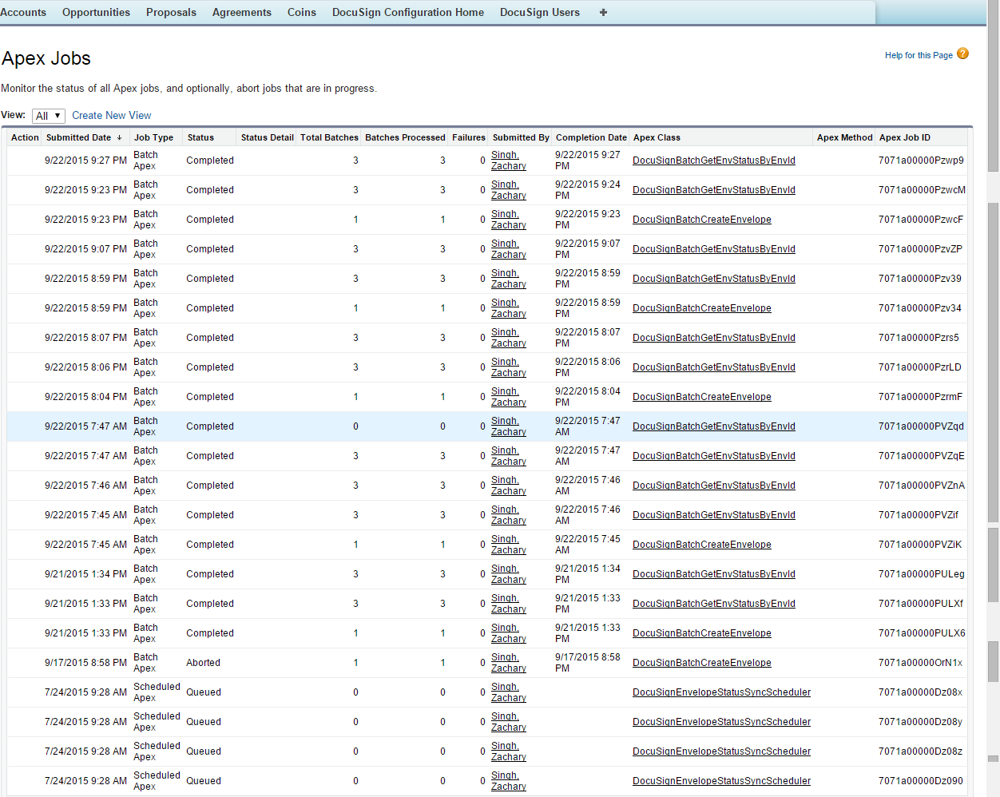

FAQs
This section contains the frequently asked questions. It also provides the solution to frequently occurring errors.
I am getting a Timeout Error.
When you send a document out for signature, you would sometimes not receive an email or would be taken back to the agreement screen with no visible change; the tags would not show up properly; you might get a locked template error.
This error is diagnosed in the debug log as a Locked Template error.
This error occurs when the server takes long time to respond, meanwhile, the other REST calls would keep on trying; causing the lock on the template.
Solution: Increase the HTTP Timeout time by performing the following steps.
Go to Setup > Develop > Custom Settings > DocuSign System Properties and click Edit.
In HTTP Timeout, enter 30,000.
Note
You can enter any value from 30,000 to 120,000 as 120,000 is the SFDC limit for setting the Timeout Time.
When you send a document out for signature, you might get a System Error displaying the following message: Your request could not be completed. Try again or contact your support team, if the error persists.
This error occurs when the REST Call was unsuccessful in being processed by the DocuSign server and could be due to multiple reasons like locking of template, signing issues,or timeout error.
Solution: Ask your system admin to view the Apex Jobs and determine the issue.
In order to access the Apex Jobs, go to Setup > Monitor > Jobs > Apex Jobs and view the job that was aborted.

Once you send the document for eSignature, the status of the record can take a little longer to update and may require a page refresh.
How do I know the format for a Salesforce merge field when editing the email?You can go to the Email Templates in Salesforce and use their template creation as a way of finding the field's merge field syntax. It will allow you to choose the object and field to generate the merge field.
Which file formats are supported while sending the document for eSignature?The following formats are supported while sending a document for signature:
DOCX, DOC, PDF, RTF
I am missing the "_____" buttonButtons in the eSignature screens are exposed through the custom settings and need to be set by the admin. Button on the record are exposed via the page layout editor.
Can I filter the attachments that are displayed on the Add Attachments page?Yes, you can filter the attachments that are displayed on the Add Attachments page.
DocuSign Connector provides an option to pass a list of attachment ids (CSV) as a parameter. The parameter name is documentIdsCsv.
You have to create a custom formula field on the Agreement / Proposal object that redirects to the Select Attachment page and passes the document ids to it in the parameter, and use the formula field for sending the document(s) for eSignature.
How do I implement Get Custom Tabs and Set Custom Tabs Callback Classes?When you send the documents for eSignature, you can add custom DocuSign tags to the document. You can choose to set some initial values to the fields and also fetch the updated values if any from the fields in the template.
In order to perform such activities, you must implement callback classes.
You must perform the following steps to implement the classes.
- Add Custom Fields to the DocuSignDefaultRecipient2_c object.
For more information on adding custom fields, refer to Adding Custom Fields.
- Create the Custom Tags in DocuSign account.
For more information on creating custom tags, refer to Creating DocuSign Tags.
- Create the Template with the appropriate Custom Tags.
For more information on creating templates, refer to Creating Templates.
- Add the classes under Apex Classes.
a. Go to Setup > Build > Apex Classes and click New.
b. Enter the code of API.
c. Click Save.
For Sample Code ofGet Custom Tabs and Set Custom Tabs, refer to Custom APIs.
- Ensure that DocuSign Custom Classes in System Properties has the callback class names populated with appropriate class names.
a. Go to Setup > Build > Custom Settings and click Manage for DocuSign Custom Classes.
b. Click New.
c. Enter Name.
d. Enter the name of Add Recipient Tabs Callback Class and Return Recipient Tabs Callback Class.
e. Click Save.
- Ensure that Recipient Tabs Enabled in DocuSign System Properties is selected.
a. Go to Setup > Build > Custom Settings and click Manage for DocuSign System Properties.
b. Click Edit for System Properties.
c. Select Recipient Tabs Enabled check box.
d. Click Save.
Once you send the document for eSignature, the status of the envelope that is sent gets updated.
The status of envelope can be checked in two ways - Manual or automatic.
To check the status of envelope sent(manually),
- Click Agreements tab.
If you are using DocuSign with Quote/ Proposal, Click Proposals tab.
- Select the appropriate agreement (or Proposal).
- Click Check eSignature Status.
The Envelope Status of all the envelopes will be updated.
In order to update the status of envelope sent automatically, your system admin must set up batch jobs.
Can I use Auto-Provisioning with One Click Send?No, you can not use Auto-Provisioning with One Click Send.
I cannot drag and drop the DocuSign Tags in Finalize in DocuSign.If you are not able to drag and drop the DocuSign tags you may want to try one of the following.
- Add a Recipient in the envelope.
- Review the permissions to add tags in Send or Correct View. Contact your System admin in case you do not have permissions to add tags.
When you login through the DocuSign Configuration Home tab, you are one of the DocuSign Users.
Solution: You must delete extra record of the users from the DocuSign Users.
- Click the DocuSign Users tab.
- Select the user that you want to delete.
- Click Delete.
When you login to DocuSign User Account through DocuSign Configuration Home, you might get an error displaying the following message: There is an issue with my DocuSign User Account Information (Login / Password).
Soultion: There are several potential solutions to this error when attempting to add a new DocuSign User.
- Verify the Credentials
- Verify the Remote Site Settings
- Verify DocuSign System Properties
- Verify the CredentialsThe credentials that are being added must match exactly to the credentials used to login to the DocuSign website. The best approach is to first open the DocuSign website and login, noting the Username and Password. Once logged in the DocuSign successfully go to the upper right dropdown in DocuSign typically under the User image (next to Help) and locate the DocuSign Account ID. Take this information and create the DocuSign User in Salesforce.
-
Verify the Remote Site URLRemote Site Settings allow outbound access to DocuSign location.
a. Go to Setup > Administer > Security Controls > Remote Site Settings.
b. If there is no entry for DocuSign Server, then add an appropriate entry by clicking New Remote Site. If you are using NA2, then add enter Remote Site URL as https://na2.docusign.net . If you are using DEMO, then enter Remote Site URL as https://demo.docusign.net .
c. Click Save.
-
Verify DocuSign EnvironmentDocuSign has several environments (DEMO, PROD, NA1, NA2, EU1) it is important that the correct environment is listed in the DocuSign System Properties. You may need to verify with DocuSign support which environment you are currently using before proceeding with the next steps.
a. Go to Setup > Build > Develop > Custom Settings and click Manage for DocuSign System Properties.
b. Click Edit for System Properties.
c. Add the appropriate value for Production Server Pod of your environment. For example, DEMO, PROD, NA1, NA2, EU1 and many more.
d. Click Save.
The scheduled batch job pulls all the envelopes from the DocuSign account that is configured in the Salesforce Org since its last synchronized time. If this is the first time the scheduled batch jobs have been run then you may see a large number of items that need to be synchronized.
Each envelope that was created can have up to 5 associated batches that need to be run during the scheduled job as described below. 1) One for getting the envelope status 2) One for getting the recipient status 3) One for getting the signed document 4) One for updating the envelope status on the Salesforce object 5) One for updating the recipient status on the Salesforce object
Therefore, potentially if 100 envelopes were created prior to the DocuSign scheduled jobs, the first time the scheduled job is run it may show up to 500 batches being processed.
How do I create a Template using DocuSign Tags?For information on creating templates using DocuSign Tags, refer to Configuring DocuSign Tags.
The scheduled batch job is not updating the status or is failing.If the scheduled batch job is not updating the status or is failing, then you should check the batch jobs.
To check the scheduled batch jobs, go to Setup > Monitor > Jobs > Apex Jobs and navigate to DocuSignBatchGetEnevelopeStatus batch job.
If you get an error as shown in the following table, it is because the batch job is kicking off the first time (or after a long time), and is trying to query a large number of envelopes; and, it is not able to process all the records because the Salesforce heap size is limited to 12 MB.
|
Job Type |
Status |
Status Detail |
Apex Class |
|---|---|---|---|
|
Batch Apex |
Failed |
First error: Apex heap size too large: XXXXXXX |
DocuSignBatchGetEnevelopeStatus |
Solution: Perform the following steps.
- Delete the currently scheduled DocuSign batch jobs.
- Click the DocuSign Users tab.
a. Select the appropriate user and click Edit.
Note: You must have only one relevant user as the DocuSign User.
b. Select COMPLETE from the CurrentSyncJobState picklist menu.
c. Set the Last Sync Completed Envelope Time field to a date-time value which is not too far back in past. For example, if today is 8/27/2015, then set the date-time value to 8/25/2015 11:00 PM.
- Reschedule the batch jobs.
a. Go to Setup > Build > Develop > Pages and select Batch Job Setup.
b. Click Preview.
- Wait for the next batch run and see if it completes.
Yes, you can send multiple documents from the same record for eSignature together.
Can I have defaulted recipients? Multiple defaulted recipients?You can default recipients by doing one of the following.
- Use Defaulted API specified contact field.
- Use DocuSign Default Recipients related list to specify recipients.
On DocuSign System Properties, there is a check-boxProduction Environment? Selecting this check-box, we will ensure that the connector sends to the DocuSign Production Server.
DocuSign wants to copy over attachments to a custom object and route eSignature from there. Does the Apttus connector supports sending documents for eSignature from a custom object?Currently, DocuSign does not support this feature.
Is there a way to customize the email text that is sent via the Send for eSignature button?Yes, you can customize the email text the email text that is sent via the Send for eSignature button.
It can be done using EmailBodyText option under the Custom Labels.
Go to Setup > Build > Create > Custom Labels and select EmailBodyText.
Click Edit and modify the Translation to the customized text that you want as your email body.
Can I remove the Finalize in DocuSign button?Yes, you can remove the Finalize in Docusign button.
Go to Setup > Build > Develop > Custom Settings and click Manage for DocuSign System Properties.
Click Edit for System Properties.
Deselect View in DocuSign Enabled check box.
Can I hide the Finalize in DocuSign button conditionally based on User/ Profile?No, you cannot hide the Finalize in DocuSign button based on User / Profile.
Is it possible to customize the emails sent to the recipient? 2 different templates for e-signature/manual signature?Currently, this feature is not available. It might be available in one of our future releases.
Is it possible to attach documents not to be signed by the recipient (sending the contract + documents for information)?Yes, you can attach documents from Notes & Attachments related list and specify the documents to be signed. You need to specify by adding DocuSign tags to the documents you want signed.
Is the recipient the signatory or is it possible to forward the contract for e-signature to someone else?The recipient is the person you send the email to. DocuSign does allow you to forward to a different person to sign the document.
Is there smartphone support for e-signature?Currently we support One Click Send. However, other additional features might be available in our future releases.
Is it possible to copy any recipient?Yes, there is a recipient type called "Carbon Copy" which allows you to send a copy of the document to recipients. This does not mean that they automatically get the copy once it has been signed completely. This means you can specify a recipient to get a copy, and you choose when they would get the copy (get it after the first signer signs, get after everyone has signed).
What about the reply from the recipient – if the recipient has signed via e-signature, is there an email sent to all recipients or only to ALE signatory? Are the other people still copied? Is it possible to decide who will receive the contract duly signed by the recipient?Only the user that has signed the document will get an email. Once everyone has signed, the sender will receive an email. If you want other recipients to receive a copy after it has been signed by the last recipient, then you need to add them as Carbon Copy recipients after the last signer. Only the sender will receive the final signed document by default.
Can you use non-Contact fields as Default DocuSign recipients?You cannot use a field on the agreement record that is not a contact field. But emails can be added under the DocuSign Default Recipients related list.
Can you have different templates for different countries or regions?You can edit the main email template through Setup. And you can select Add Additional Details to modify the email when sending for signature each time, but there no option for multiple email templates at this time.
Is it possible to include an e-signature block for initials on each page of a contract document similar to a footer that does not require this to be manually added to each page?You need to manually add the initial tag into the template footer either when you create the template, or when you use Finalize in DocuSign.
What is the process for sending a revised document (for example, to correct a typo) after a recipient has signed and returned the submitted version?That's dependent on their workflow. Out of the box, it follows the usual contract business flow where after the contract has been signed the button disappears and you can now activate the agreement. You can customize your flow so that the button does not disappear or reappear based on a certain status so you can send for signature when you require it.
Behavior of Include Certificate custom settingInclude Certificate custom setting works in combination with Retrieve as a Combined Document custom setting. Refer to the following table to learn more about the behavior. To enable this feature, at least one attachment must be attached in the Notes & Attachments section. And, one recipient must be added to DocuSign Recipients related list.
|
Scenario |
Include Certificate checked? |
Retrieve as a Combined Document checked? |
Attach Certificate of Completion to the EnvelopePDfchecked? (In DocuSign Account) |
Behavior |
|
Scenario 1 |
Yes |
Yes |
Yes |
Admin receives the final signed PDF with the last page containing the DocuSign Certificate of Completion. |
|
Scenario 2 |
Yes |
No |
No |
Admin receives the final signed PDF and Certificate of Completion both as separate document. |
|
Scenario 3 |
Yes |
Yes |
No |
Admin receives the final signed PDF but the certificate of Completion is not received. |
To enable the Attach Certificate of Completion to the Envelope PDF setting in DocuSign account,
- Click the User Menu and select Preferences.
- Under Account Administration, select Features.
- Select the Attach the Certificate of Completion to the Envelope PDF check box.
- Click Save.
Add Attachments Enabled and Add Recipients Enabled custom settings control the configurations of recipients and attachments. Refer to the following table to learn more about the behavior. To enable this feature, at least one attachment must be attached in the Notes & Attachments section. And, one recipient must be added to DocuSign Recipients related list.
|
Scenario |
Add Attachments Enabled checked? |
Add Recipients Enabled checked? |
Behavior |
|---|---|---|---|
|
Scenario 1 |
No |
No |
The user will not be able to add any new attachments. The user will not be able to add or configure recipients. |
|
Scenario 2 |
Yes |
No |
The user will be able to add or select attachments. The user will not be able to add or configure recipients. |
|
Scenario 3 |
No |
Yes |
The user will not be able to add or select attachments. The user will be able to add or configure recipients. |
|
Scenario 4 |
Yes |
Yes |
The user will be able to add or select attachments. The user will be able to add or configure recipients. |
You might see the processing screen for a long time,when you send a document for eSignature. This screen may never resolve.
Reason: This can be due to a high number of batch processes going on in your org. After sending the document for eSignature, the Apex Jobs in Setup will display if the batch job is in Holding status. If it is, then it is attributed to a Salesforce known issue concerning queue size and the number of batches running.
For more information, refer to https://success.salesforce.com/issues_view?id=a1p300000008YgIAAU .
For One-Click Send, which Email Subject and Body text is used?The default text of email subject for the envelopes sent using one click is Document Signature Required,and the email body is defaulted to DocuSign's default Email Body text.
Which Email Templates are used for One-Click Send? Can I use Merge Fields in my Email Templates for One-Click Send?Recipient level email templates are picked, but merge fields will not be evaluated. So if templates are used to define recipient level emails, they should not contain any merge fields.
Which custom setting should I select if I want to select all the attachments on the Add Attachments page, by default?In order to automatically select all the documents on the Add Attachments page, you must select the Select All Attachments custom setting in Comply System Properties or Proposal System Properties, depending on which package have you installed DocuSign for.
Select All Attachments custom setting and Select First Document Default custom setting can affect your result. For a clear understanding, refer to the Scenario table below.
|
Select First Document Default checked? (System Properties) |
Select All Attachments checked? (Comply System Properties / Proposal System Properties) |
Result |
|---|---|---|
|
Yes |
Yes |
All the documents on the Add Attachments page are auto-selected. |
|
Yes |
No |
Only the first document on the Add Attachments page is auto-selected. |
|
No |
Yes |
All the documents on the Add Attachments page are auto-selected. |
|
No |
No |
None of the documents on the Add Attachments page are auto-selected. |
DocuSign Services now enables you to associate a different brand for different types of agreements. You can customize the signing experience for recipients based on the agreement factors. You can pass the Brand Id using a new parameter called brand. If you do not pass any brand Id, the system will send the document with the default brand associated with the account.
Note: We are documenting the steps for Agreements object here. You can perform the same steps for Proposals as well.
For example, you have different brands associated with different types of agreement. You want to send documents with different look and feel. You can associate different Brand Ids with different types of agreements in order to do so.
You must perform the following steps in order to send the document for eSignature
To send documents for eSignature with a specific Brand ID
- Login to your DocuSign account.
- Click the User Profile and select Preferences.
- Click Branding. Create new branding with new colors and images as per your business requirements.
- Copy the Brand Id from branding.
- Create a new button on the Agreement object by copying existing button and applying parameter.
- Go to Setup > Build > Create > Objects and select Agreement (Installed Package: Apttus Contract Management Package).
- Under Custom Fields & Relationships related list, click New.
- Select Formula radio button and click Next.
- Enter the Field Label as Send for eSignature.The Field Name will be auto-populated.
- Select Text as Formula Return Type.
- Click Next.
- In the formula editor, enter the following formula.
IF( OR( ISPICKVAL(Apttus__Status_Category__c,"In Authoring"), (AND(ISPICKVAL(Apttus__Status_Category__c,"In Signatures"), ISPICKVAL(Apttus__Status__c,"Ready for Signatures") )), (AND(ISPICKVAL(Apttus__Status_Category__c,"In Signatures"), ISPICKVAL(Apttus__Status__c,"Signature Declined") ) ) ), HYPERLINK("/apex/Apttus_CMDSign__CMDocuSignCreateEnvelope?brand=ee5bf510-7070-4931-a1f8-2823da145b1b&id="&Id, IMAGE("/resource/Apttus_DocuApi__eSignature","Send For eSignatures"), "_self"), NULL )
- Send your document using new button.
There are no limits for outbound calls from Contract Management to DocuSign but DocuSign has implemented API Call Rate Limits to balance loads. For more information, see API Call Rate Limits .